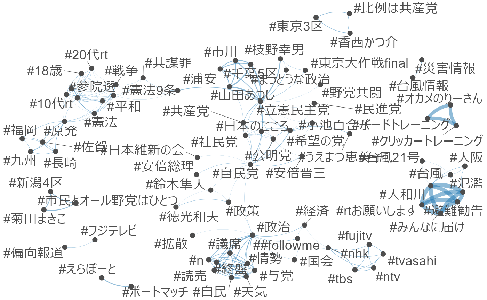
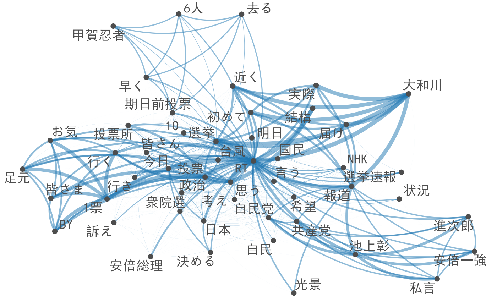

事例: 2017年総選挙に関するツイート
Kohei Watanabe and Akitaka Matsuo
Source:vignettes/pkgdown/examples/japanese_twitter_ja.Rmd
japanese_twitter_ja.Rmdコーパスのダウンロード
本コーパスは，2017年総選挙の際に収集されたツイートから構成されている．ツイートは，TwitterのStrem
APIから、キーワード”選挙”を使い，10月20日から10月31日の期間にダウンロードした．インターネット上で収集されたテキストは，英数字の全半角が統一されていないので，stri_trans_nfkc()によって表記を標準化すると良い．
devtools::install_github("quanteda/quanteda.corpora")
corp <- quanteda.corpora::download(url = "https://www.dropbox.com/s/co12wpj08pzqz71/data_corpus_election2017tweets.rds?dl=1")
corp <- as.corpus(corp)
corp[] <- stringi::stri_trans_nfkc(corp) # 表記を標準化前処理
トークン化
ツイートのトークン化では，ハッシュタグの後に続く改行を保持するためにremove_separator = FALSEとし，次のtokens_remove()で，語の位置関係を維持しながら，改行，空白，‘#’と’@’以外の記号を削除する．日本語のハッシュタグは，’#’とそれの続く語が分離されてしまうので，それらをtokens_compound()で文書行列を作成する前に結合する．
toks <- tokens(corp, remove_separator = FALSE, remove_url = TRUE)
toks <- tokens_select(toks, pattern = "^[\\w#@]+$", valuetype = "regex", padding = TRUE)
min_count <- 10
# 漢字
library("quanteda.textstats")
kanji_col <- tokens_keep(toks, pattern = "^[一-龠]+$", valuetype = "regex", padding = TRUE) |>
textstat_collocations(min_count = min_count)
toks <- tokens_compound(toks, kanji_col[kanji_col$z > 3,], concatenator = "")
# カタカナ
kana_col <- tokens_keep(toks, pattern = "^[ァ-ヶー]+$", valuetype = "regex", padding = TRUE) |>
textstat_collocations(min_count = min_count)
toks <- tokens_compound(toks, kana_col[kana_col$z > 3,], concatenator = "")
# 漢字，カタカナおよび数字
any_col <- tokens_select(toks, pattern = "^[0-9ァ-ヶー一-龠]+$", valuetype = "regex", padding = TRUE) |>
textstat_collocations(min_count = min_count)
toks <- tokens_compound(toks, pattern = any_col[any_col$z > 3,], concatenator = "")
# ハッシュと語の結合
toks <- tokens_compound(toks, pattern = phrase("# *"), concatenator = "")
tweet_dfm <- dfm(toks)分析
タグの共起ネットワーク
ここでは，dfm_select()によってハッシュタグを選択しているが，そこに多くに含まれる’#選挙’や’#衆院選’などのハッシュタグは，クラスターを明確にするために削除している．
library("quanteda.textplots")
tag_dfm <-
tweet_dfm |>
dfm_select(pattern = "#*") |>
dfm_remove(pattern = c("*選挙*", "*衆院選*", "*衆議院*", "*投票*"), min_nchar = 2) |>
dfm_trim(min_termfreq = 10)
tag_fcm <- fcm(tag_dfm)
feat <- names(topfeatures(tag_dfm, 100))
textplot_network(fcm_select(tag_fcm, pattern = feat),
min_freq = 0.8,
vertex_labelfont = if (Sys.info()["sysname"] == "Darwin") "SimHei" else NULL)
語の共起ネットワーク
ツイートのメッセージを分析するためには，dfm_remove()でハッシュタグやユーザー名を削除する．ここでは，平仮名だけからなる特徴は文法的な要素であることが多く，話題を理解するのに役に立たないので削除している．
library("quanteda.textstats")
msg_dfm <- tweet_dfm |>
dfm_remove(pattern = c("#*", "@*")) |>
dfm_remove(pattern = "^[ぁ-ん]+$", valuetype = "regex", min_nchar = 2) |>
dfm_trim(min_termfreq = 10) |>
dfm_toupper()
msg_fcm <- fcm(msg_dfm)
feat <- names(topfeatures(msg_dfm, 50))
textplot_network(fcm_select(msg_fcm, pattern = feat), min_freq = 0.3,
vertex_labelfont = if (Sys.info()["sysname"] == "Darwin") "SimHei" else NULL)